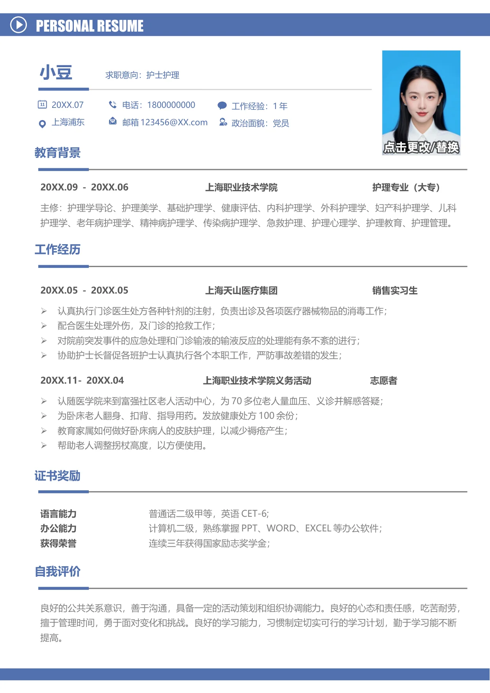

20XX.07
上海浦东
电话：1800000000
邮箱123456@XX.com
小豆
求职意向：护士护理
工作经验：1 年
政治面貌：党员
PERSONAL RESUME
语言能力
普通话二级甲等，英语CET-6;
办公能力
计算机二级，熟练掌握PPT、WORD、EXCEL 等办公软件；
获得荣誉
连续三年获得国家励志奖学金；
证书奖励
良好的公共关系意识，善于沟通，具备一定的活动策划和组织协调能力。良好的心态和责任感，吃苦耐劳，
擅于管理时间，勇于面对变化和挑战。良好的学习能力，习惯制定切实可行的学习计划，勤于学习能不断
提高。
自我评价
教育背景
20XX.09 - 20XX.06 上海职业技术学院 护理专业（大专）
主修：护理学导论、护理美学、基础护理学、健康评估、内科护理学、外科护理学、妇产科护理学、儿科
护理学、老年病护理学、精神病护理学、传染病护理学、急救护理、护理心理学、护理教育、护理管理。
工作经历
20XX.05 - 20XX.05 上海天山医疗集团 销售实习生
•
认真执行门诊医生处方各种针剂的注射，负责出诊及各项医疗器械物品的消毒工作；
•
配合医生处理外伤，及门诊的抢救工作；
•
对院前突发事件的应急处理和门诊输液的输液反应的处理能有条不紊的进行；
•
协助护士长督促各班护士认真执行各个本职工作，严防事故差错的发生；
20XX.11- 20XX.04
上海职业技术学院义务活动 志愿者
•
认随医学院来到富强社区老人活动中心，为70 多位老人量血压、义诊并解惑答疑；
•
为卧床老人翻身、扣背、指导用药。发放健康处方100 余份；
•
教育家属如何做好卧床病人的皮肤护理，以减少褥疮产生；
•
帮助老人调整拐杖高度，以方便使用。